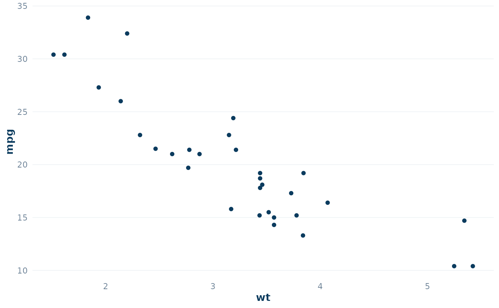

theme_creel() applies a light, publication-friendly theme aligned with the
package website colours. It is designed to be a stable default for tidycreel
examples, vignettes, and autoplot() methods.
See also
Other "Visualisation":
autoplot.creel_estimates(),
autoplot.creel_length_distribution(),
autoplot.creel_schedule(),
creel_palette(),
plot_design()
Examples
if (requireNamespace("ggplot2", quietly = TRUE)) {
ggplot2::ggplot(mtcars, ggplot2::aes(wt, mpg)) +
ggplot2::geom_point(colour = creel_palette()[["primary"]]) +
theme_creel()
}
